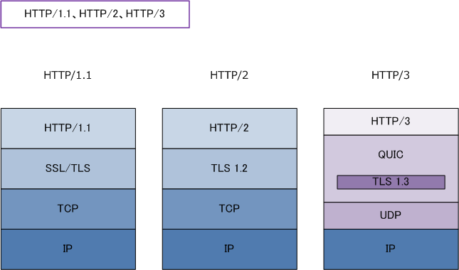
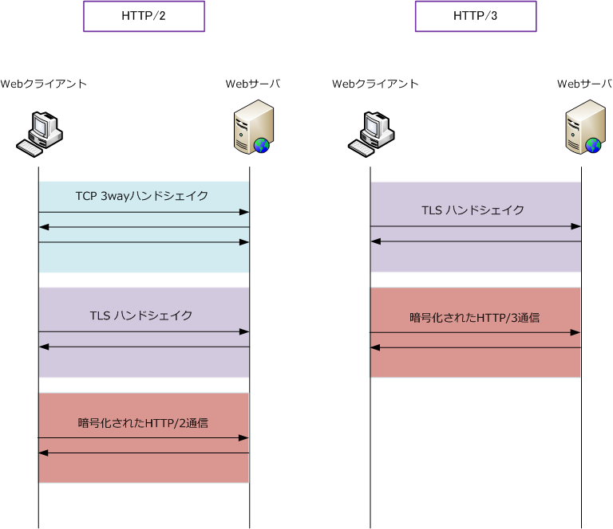
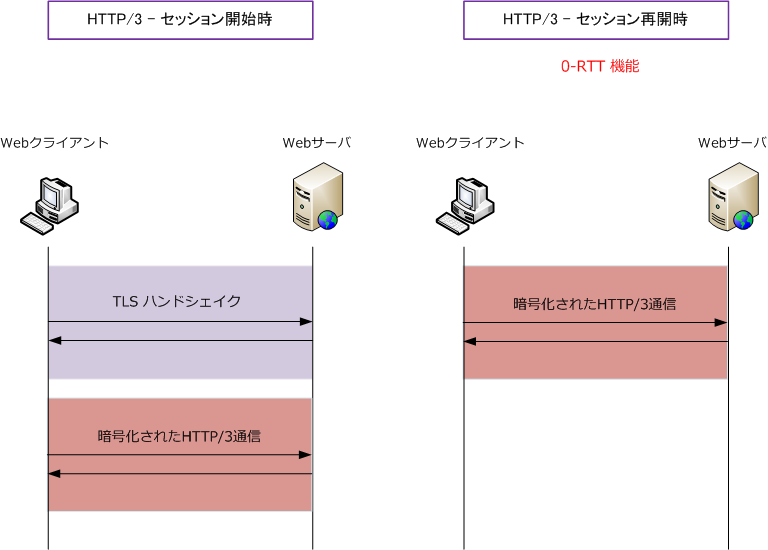

HTTP/3
HTTP/3（Hypertext Transfer Protocol version 3）とは
HTTP/3は、WebサーバとWebクライアントがデータを送受信するために使用するHTTPのバージョン3です。 HTTP/1.1ではテキスト形式、HTTP/2はバイナリ形式、HTTP/3もバイナリ形式でメッセージのやりとりを 行います。HTTP/3はRFCドラフト「HTTP over QUIC」をベースとしています。
HTTP/2では、Google社がHTTPメッセージをより効率良く転送するSPDYというプロトコルを開発し、後に HTTP/2の標準化に至りました。HTTP/3でも、Google社がTCPの改善のために設計したQUICプロトコルが ベースとなり、2022年6月にHTTP/3の標準化に至ることになりました。
| HTTPバージョン | 派生元 | RFC | 導入年 |
|---|---|---|---|
| HTTP/1.1 | - | RFC 9112 | 1997年 |
| HTTP/2 | SPDY | RFC 9113 | 2015年 |
| HTTP/3 | QUIC | RFC 9114 | 2022年 |
HTTP/3 - UDPとQUICを使用
HTTP/1.1とHTTP/2の通信ではTCPポート番号80と443を使用しますが、HTTP/3ではUDPポート番号443を 使用します。 HTTP/3ではTCPではなくUDPとQUICを使用しています。HTTP/3はTCPを使用しない代わりに パケット再送、トラフィック制御、信頼性ある通信をQUICが担ってくれます。
HTTP/1.1とHTTP/2の通信では、トランスポート層にTCPを使用してセキュリティにはTLSを実装しました。 HTTP/3では、トランスポート層にUDPを使用してTLS1.3を取り込んだQUICがセキュリティを担っています。 HTTP/1.1とHTTP/2ではTLSの実装は必須ではありませんでしたが、HTTP/3からはTLSの実装は必須となり、 TLS1.3による暗号化通信が必須となります。

| HTTPバージョン | 使用するポート番号 | TLSの実装 | TLSバージョン |
|---|---|---|---|
| HTTP/1.1 | TCP 80 / TCP 443 | 任意 | 任意 |
| HTTP/2 | TCP 80 / TCP 443 | 任意 | TLS1.2 / TLS1.3 |
| HTTP/3 | UDP 443 | 必須 | TLS1.3 |
HTTP/3 - Web高速化の仕組み - 接続開始時の遅延が少ない
HTTP/3では、UDPとQUICプロトコルを使用することで、HTTP/2よりもWebサイトの表示が速くなります。
HTTP/2で使用するTCPは、通信開始時に3wayハンドシェイクが発生しWebサイトのデータ取得を開始する までに3往復のやり取りが発生し、TLS通信を行う際にはさらにSSL/TLSハンドシェイクが発生して鍵交換の やり取りが完了した後に通信開始となっていました。
HTTP/3で使用するUDPは、TCP 3wayハンドシェイクは発生することなくTLSハンドシェイクが始まります。 HTTP/3では信頼性のある通信はQUICにより実現しており、セキュアな通信はTLS1.3により実現しています。

HTTP/3では、TLS1.3の 0-RTT（Zero Round Trip Time）という機能を利用することで、いったん通信を した相手とは、セッション再開時にTLSハンドシェイクなしにデータ通信を開始することができます。

HTTP/3 - Web高速化の仕組み - HOL（head-of-line）ブロッキングの発生防止
HTTP/3はTCPで問題となるHOLブロッキング（ヘッドオブラインブロッキング）の問題を解決しています。 HOLブロッキングとは、TCPパケットを連続で送信する時に、先頭パケットにエラーが発生した時に再送が 完了するまで後続パケットを送信できない事象のことです。HTTP/3では、QUICによりHOLブロッキングの 問題が解決されて、エラー発生時のパケットの再送中でも、同時並行して他のパケットを転送処理できます。
HTTP/3 - 通信の継続性 - Connection Migration
HTTP/3では、Webクライアントが通信中にIPアドレスやポート番号が変更した場合でも、同じ通信を継続 できる仕組みがあります。例えば、WebクライアントのスマホがWi-Fi通信から4G/5G通信に切り替わる時 HTTP/1.1やHTTP/2で使用するTCPではコネクション識別子にIPアドレスとポート番号を使用することから 既存のコネクションは維持できず、新規のコネクションを確立する必要があります。
一方、HTTP/3で使用するQUICではコネクション識別子にコネクションIDを使用するため、Wi-Fi通信から 4G/5G通信に切り替わった場合でも（その逆の場合でも）、スマホのようなモバイルクライアントは再接続 することなく通信を継続できます。このように、ネットワーク経路が切り替わりIPアドレスやポート番号が 変更しても通信を維持できる機能のことをコネクションマイグレーションと言います。
HTTP/3 - サーバプッシュ
HTTP/3でもサーバプッシュは実装されますが、HTTP/2で実装されたサーバプッシュと動作が異なります。 WebクライアントからHEADERSフレームを受信したサーバは、PUSH_PROMISEフレームを送信しますが このPUSH_PROMISEフレームにはPush IDとEncoded Field Sectionが含まれます。
| PUSH_PROMISEフレーム内の情報 | 説明 |
|---|---|
| Push ID | 次に送信するPushストリームとひもづけるためのID |
| Encoded Field Section | QPACKによりエンコードされたリクエストヘッダ（：authority や : path が含まれる） |
サーバプッシュのレスポンスを受信したクライアントがキャッシュ領域に格納し、以降はキャッシュ領域の リソースはリクエストせずキャッシュ領域の保存情報を使用するという動作はHTTP/2・HTTP/3で共通です。
HTTP/3では、クライアントが自身のリソースを節約するためにサーバが送信するサーバプッシュの数を制限 できます。PUSH_PROMISEフレーム受信後にクライアントが制限を行うと判断した場合は、MAX_PUSH_ID フレームを送信します。このフレームを受信したサーバは指定数以上のサーバプッシュは行わなくなります。
HTTP/3ではサーバプッシュをキャンセルすることもできます。クライアントはPUSH_PROMISEフレームの Encoded Field Sectionに記述されたURLのキャッシュがすでにある場合はCANCEL_PUSHフレームを送信し キャンセルすることができます。
HTTP/3 - ストリーム
HTTP/3では、HTTP/2同様にストリーム上でフレームをやり取りします。HTTP/3で使用するストリームは、 QUICにより多重化されており単方向ストリームと双方向ストリームの大きく2つに分類できます。文字通り 片側からのみデータを送信する単方向ストリームにはControlストリームとPushストリームなどがあります。 Pushストリームはサーバ側でのみ、Controlストリームはクライアント側でもサーバ側でもオープンできます。
| 単方向 - ストリーム タイプ | 説明 |
|---|---|
| Control | 通信制御に関するパラメータの送信、エラー通知のために使用するストリーム |
| Push | サーバプッシュのために使用するストリーム |
双方からデータを送信できる双方向ストリームにはRequestストリームがあります。双方からデータを送信 できますが、クライアントからのみオープンできるストリームでありHTTPメッセージを送受信します。この RuquestストリームでHTTPリクエストとHTTPレスポンスを送受信したら再利用されずにクローズされます。
| 双方向 - ストリーム タイプ | 説明 |
|---|---|
| Request | HTTPメッセージを送受信するためのストリーム |
HTTP/3 - フレームタイプ
HTTP/3では、HTTP/2同様にストリーム上でバイナリ形式のフレームをやり取りします。HTTP/3で使用 されるフレームは以下の7つがあります。0x02、0x06、0x08、0x09は予約済みとなっています。
| タイプ値 | フレーム名 | 役割 |
|---|---|---|
| 0x0 | DATA | HTTPリクエストやHTTPレスポンスのデータであるHTTPボディを送信 |
| 0x1 | HEADERS | HTTPリクエストヘッダやHTTPレスポンスヘッダのヘッダを送信 |
| 0x3 | CANCEL_PUSH | サーバプッシュのキャンセル |
| 0x4 | SETTINGS | 通信に関するパラメータのSETTINGSパラメータを送信 |
| 0x5 | PUSH_PROMISE | サーバプッシュに用いるストリームを予約（サーバのみ送信可能） |
| 0x7 | GOAWAY | コネクションの切断処理の開始 |
| 0xd | MAX_PUSH_ID | サーバプッシュ可能な最大Push IDを通知 |